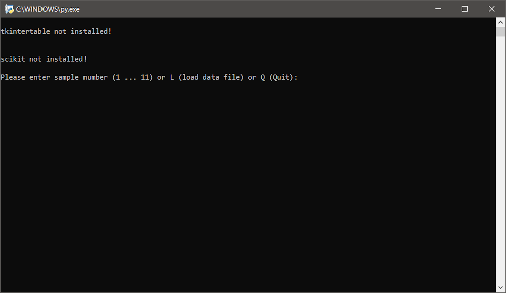
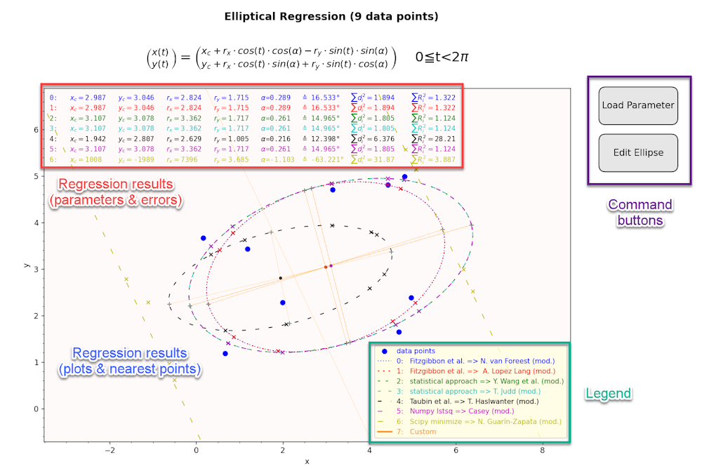
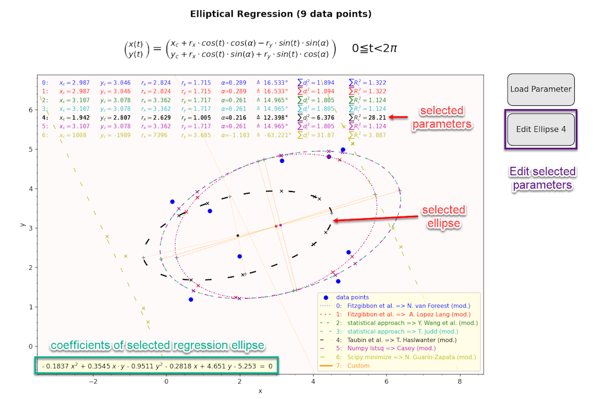

{kind=link}

This Python program is used for fitting a 2D ellipse to data points (x, y). Several different approaches are used and compared to each other. It is programmed in Python 3.7.9. (windows version). The parameters of the found regression ellipse can be edited, loaded and saved.
| File | Description |
|---|---|
| fitEllipse.py | Main program with the fitting algorithms (Normal start) |
| start_fitEllipse.py | Start of program in a venv environment (it will install all requirements in a venv environment) |
| requirements.txt | List of requirements (tkintertable is optional but highly recommended) |
| mainDialog.py | Main dialog (using tkinter + tkintertable) |
| editor.py | Result and editor dialog (using matplotlib) |
| editorConfig.py | Editor configuration file (global variables) |
| fileDialogs.py | File dialogs (open, save, ...) |
| quarticFormula.py | Formulas for quartic equations (including cardanic and quadratic cases) |
| Icon_fitEllipse.ico | Icon file for main dialog |
| Icon | Icon file for Pyinstaller Packager |
| fitEllipse.spec | Spec file for Pyinstaller Packager (windows version) |
| Docu (directory) | Documentation files (start ReadMe.html or Readme.md) |
| Package (directory) | Packaged version of program (windows EXE only) |
| Sample_Data (directory) | Examples for data points and parameter sets (including data points) |
The program is started directly with fitEllipse.py (requirements see above). Dialogs can be closed by pressing <ESC> key.
If tkintertable is installed a GUI is shown:
After the regression is started with button
Start Regression
the results are displayed via matplotlib:

If tkintertable is not installed a console is used (lesser options):

After the regression results via matplotlib are closed a summary is shown in the console:

The program is started within a venv enviropnment. The requirements are installed via pip (downloading libraries). This kind of start will take its time...
The advantage of this start type is that no manual installation of Python modules is neccessary. Extra installation is performed automatically in a separate virtual envorinment (venv). Internet Access is needed.
The program is started as standalone EXE (windows only). No Python is neccessary. The EXE was packaged with pyinstaller. There is a spec file for Pyinstaller Packager (windows version):
The main dialog:

is divided into 4 areas:
In this area you can:
In this area you will see a preview of the data points if the are validated (see below).
In this are you can edit data points (even scientific format is accepted, commas are translated into points). In normal cases the input is validated automatically otherways Validate Data command can be issued manually.
In this area you can:
The result dialog:  is divided into 4 areas:
Next to the Regression results (parameters of regression ellipses) also the geometric Error:
and the residual error:
with
are shown. In order to get comparable redidual errors the coefficients are normalized with:
If you click (pick) one result, the corresponding coefficients are shown and the Edit selection is changed to the selected regression parameters:

The regression ellipses are plotted (including center, axes and nearest points). If you click (pick) one result plot, the corresponding coefficients are shown and the Edit selection is changed to the selected regression parameters (see above).
The coefficients of the selected regression ellipse are shown. Selection can be canceled by clicking into the space between results (not available in editor mode).
In this area you can:
The editor mode:

has an additional parameter set (custom), a command button and editor tools.
An additional parameter set (custom) is shown in editor mode only. All changes are updated in realtime (depending on computer). The paramters are changes via editor tools or loading of parameters (see above)
The current custom ellipse parameters including errors and data points will be saved as csv-file.
The custom parameters are changed via sliders, text inputs, decrements and increments. Custom parameters, coefficients and the plot is updated in realtime (depending on computer).
Data points can be save from the main dialog or as part of the parameter file in editor mode.
Standalone data point files should be formatted as american csv-files (x and y in 2 columns, no header):
For compatibility reason headers are accepted:
as well as x and y in rows with other separators (tab, space or semicolon):
as well as German csv format (preview is disturbed!):
Autodetection will detect correct format in most cases.
Parameter files are separated into the parameter and the data point section (don't change header lines).
It is possible to use parameter files as input for data files (main dialog).
The requirements are listed in:
tkintertable is optional but highly recommended (no main dialog without, see above).
scikit-image is purely optional and will add an algorithm of scikit (same results as Fitzgibbon et. al).